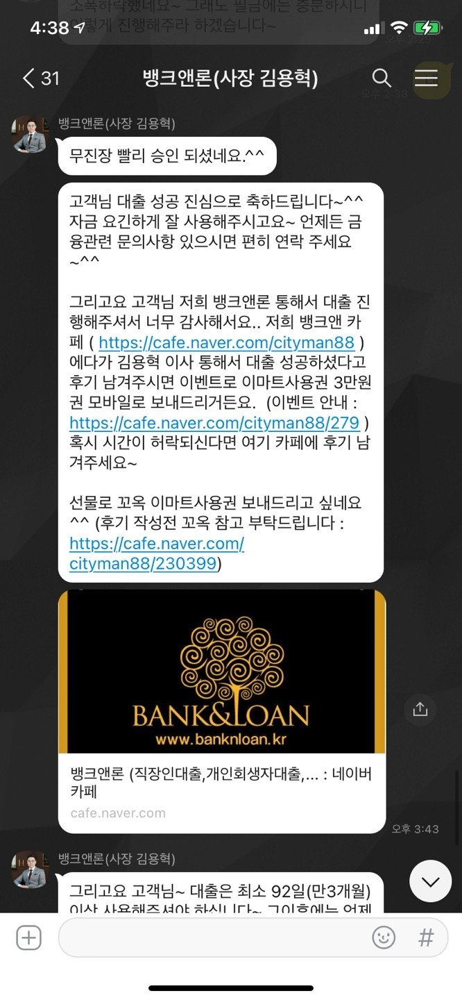
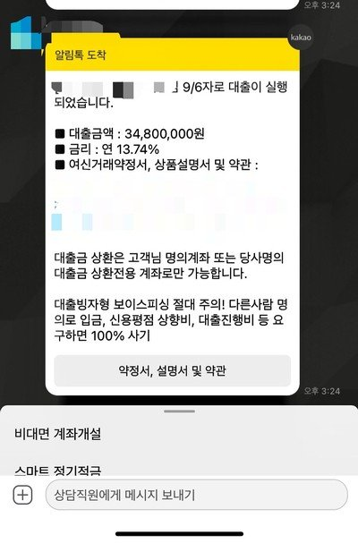

[직장인대출] 김용혁이사님 통해서 대출진행했습니다, 감사합니다
대출조건.
재직형태 : 직장인
재직기간 : 실근무 4개월가량이나 통장실수령 (급여이체 3회)
사대보험 가입유무 : 유
소득 : 연 3480만원 (직장의료보험 납부확인용에 신고된금액)
채무내역 : *민 신용대출 2000만원, *업은행 실업자대출(?) 200만원, *대캐피탈 차할부건 남은금액 2950정도..
필요서류 : 신분증 앞면사진, 건강보험자격득실확인서(전체내역), 건강보험납부확인서
오래동안 한직장에서 일을하다 일을 그만두고 새로 일을 시작한지 얼마되지않은 상태에서
급하게 3000만원이라는 큰돈이 필요해 1금융에서 추가대출을 알아보다가 이직한지도 얼마되지 않았고,
차량을 할부로 구입하면서 그 금액이 신용대출로 잡히는줄도 모르고 있다가
이번에 대출을 알아보면서 알게된 금융멍청이라 이미 대출이 5000만원이 넘어서 추가대출은 900~1000정도밖에
되지도 않고, 그렇다고 여기저기 여러군데서 대출을 받을 수도 없고.. 하..
토스로 조회도 해보고 했는데 왠지 정확한거 같지도 않고해서
김용혁이사님께 오전 11시쯤 대출 문의를 드렸어요~
신용에 영향주지않는가조회로 여러군데 알아봐주시고 그중 금리 제일 저렴하게 나온 곳에서 대출진행을
해서 당일 바로 입금까지 받았습니다.
김용혁이사님 덕에 이렇게 당일 하루만에 빠르게 대출진행할 수 있어서 너무 감사드려요^^

